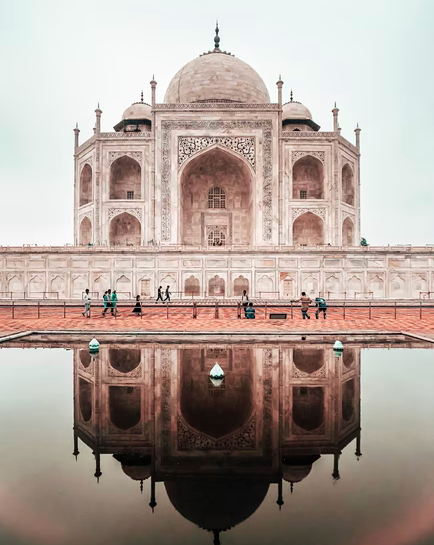

Don't be afraid to be < then a 100% success:

"
Taj Mahal
The Taj Mahal is an Islamic religious building, mosque and tomb built in the
17th century by king Shah Jehan in memory of his wife, Mumtaz Mahal. Its chief
architect was Ustad Ahmad Lahauri.
The building is in the city of Agra, Uttar Pradesh. Widely thought as one of the most
beautiful buildings in the world, it is one of India's biggest tourist attractions.
It is listed as a UNESCO World Heritage Site, together with the Agra Fort,
2.5 kilometers away. It was listed as one of the 7 Wonders of the World in 2007.
It is located on the south bank of Yamuna river in Agra. It is a splendid monument,
but because of pollution, the Taj Mahal is turning yellow. It Is one of the most
notable Islamic architectures built by the Mughals in India. "
Mujju Since 1997 © Copyright